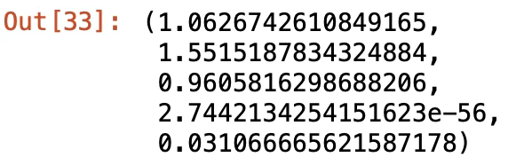

기초통계 5. 분포 적합성검정
chapter 1. 적합성 검정
1. 개념
(1) 필요이유
분포 적합성 검정은 관측된 자료가 특정 이론적 분포를 따른다는 가설의 타당성을 평가함으로써, 통계적 모형의 전제가 충족되는지를 확인하고 추론 결과의 신뢰성을 확보하기 위해 수행된다.
통계 모형의 전제 검토
많은 통계 분석 기법(회귀분석, 분산분석, 최대우도법 등)은 특정한 확률 분포(정규분포, 포아송분포 등)를 전제로 한다. 이러한 가정이 충족되지 않으면 분석 결과는 왜곡되거나 신뢰할 수 없는 결론을 초래할 수 있다. 따라서 분포 적합성 검정은 분석 전, 자료가 전제된 분포를 따르는지 확인하는 데 핵심적인 절차이다.
이론 모형의 타당성 평가
통계적 실험이나 조사에서 수립한 이론적 분포 모델(예: 유전 비율, 고객 유입 패턴 등)이 실제 데이터에 적합한지 검정하는 것은 모형 자체의 타당성을 판단하는 데 필수적이다. 예를 들어, 멘델의 유전 법칙에 따라 3:1 비율이 예측된다면, 실제 결과가 이와 유의하게 다른지를 검정해야 한다.
모수 추정의 신뢰도 확보
분포가 적절하게 지정되지 않은 상태에서 수행된 추정은 불편하거나 비효율적인 추정량을 유도할 수 있다. 분포 적합성 검정은 분석자가 설정한 분포 가정이 얼마나 정당한지를 사전 확인함으로써, 추정과 추론의 타당성을 보장해준다.
모의실험, 품질관리 등 응용 분야에서의 판단 기준
산업 통계에서는 생산품의 불량률이 이항분포를 따른다고 가정하고 관리도를 구성함 → 이 분포 적합성이 무너지면 관리 기준 자체가 무의미하다. 서비스센터의 전화 수신량이 포아송 분포를 따른다는 가정을 기반으로 인력 배치 → 적합성 검정이 필요하다.
(2) 적합성 검정 개념
분포 적합성 검정은 관측된 데이터가 특정한 이론적 분포(모형 분포)에 잘 부합하는지를 검정하는 통계적 방법이다. 즉, 어떤 모집단에서 추출된 표본이, 가정한 분포—예를 들어 이항분포, 포아송분포, 정규분포 등—로부터 생성되었을 가능성을 평가한다. 이 검정은 다음과 같은 상황에 적용된다.
주어진 자료가 특정 분포에 따르는지 검정하고자 할 때
실험 결과가 이론적으로 기대되는 확률 분포와 일치하는지 검정할 때
모집단 확률밀도함수 \(f(x;\theta)\)로부터 얻은 확률표본 데이터의 확률밀도함수는 모집단 확률밀도함수와 동일하므로 확률표본데이터로부터 확률밀도함수를 얻고 이를 이용하여 모집단 확률밀도함수에 대한 가설을 검정할 수 있다.
귀무가설이 “설정한 이론 분포를 따른다”이므로 귀무가설이 기각되면 데이터가 어떤 분포를 따르는지 알 수 없다. 하여, 적합성 검정은 귀무가설이 채택되는 것이 추론의 관심이다.
(3) \(\chi^{2}\) 적합성 검정
확률표본 데이터로부터 히스토그램을 구한다. 이산형 데이터는 가질 수 있는 개별 값(포아송분포와 같이 이론적으로 무한 값을 갖는 경우는 마지막 구간의 빈도가 5 이상이 되도록 구간 수를 결정한다.)이 구간이고 연속형은 데이터의 범위(=최대값-최소값)를 10~12개 구간 개수가 되도록 동일 폭으로 나눈 구간으로 정의된다.
확률표본 데이터로부터 빈도표를(이를 관측 빈도) 만들고 (histogram과 동일) 모집단이 따를 것 같은 이론적 분포로부터(예:정규분포) 빈도표(이를 기대 빈도)를 만들어 비교하면 빈도의 차이가 거의 없으면 모집단은 그 분포를 따른다고 하자 그렇지 않으면 기각한다. 표본 분포가 설정한 모집단 분포와 동일하다면 관측빈도와 기대빈도는 동일할 것이다.
통계적 가설
귀무가설 : 확률표본 데이터는 가정된 이론분포를 따른다.
대립가설 : 확률표본 데이터는 가정 분포를 따르지 않는다. 그러나 어떤 분포를 따르는지는 알 수 없다.
검정통계량
\(\chi^{2} = \overset{k}{\sum_{i = 1}}\frac{(O_{i} - E_{i})^{2}}{E_{i}} \sim \chi^{2}(df = k - 1 - m)\), 여기서 \(O_{i}\)는 범주 \(i\)에서의 관측도수, \(E_{i}\)는 해당 범주에서의 이론적 분포로부터 계산되는 기대도수이며 \(k\)는 범주의 수이다. 그리고 \(m\)은 모수 추정에 사용된 자유도 수이다.
2. 이산형 확률모형
주사위는 공평한가? (균일분포)
보유한 주사위가 공정한지 fair 알아보기 위하여 1,000번을 던저 나온 결과를 정리한 것이다. 주사위가 공정한지 유의수준 5%에서 검정하시오.
| 눈금 | 1 | 2 | 3 | 4 | 5 | 6 |
| 빈도 \(O_{i}\) | 150 | 160 | 165 | 155 | 170 | 200 |
귀무가설 : 주사위는 공정하다. 각 눈금이 나올 확률은 \(\frac{1}{6}\)이다.
대립가설 : 주사위는 공정하지 않다.
기대빈도 \(E_{i}\) : 귀무가설이 옳다는 가정 하에 계산되는 빈도이다. 그러므로 1~6 각 눈금의 기대빈도는 1000/6-166.7으로 동일하다.
검정통계량 \(ts = \sum_{i}\frac{(O_{i} - E_{i})^{2}}{E_{i}} \sim \chi^{2}(df = k - c - 1)\), \(k =\)셀의 크기, \(c =\)추정된 모수의 개수,\(TS = 9,49 \sim \chi^{2}(5)\)
유의확률 : 0.091이므로 귀무가설이 채택되어 주사위는 공평하다고 할 수 있다.
from scipy.stats import chisquare
# 관측 빈도
observed = [150, 160, 165, 155, 170, 200]
# 총 시행 횟수
n = sum(observed)
# 기대 확률: 공정한 주사위 → 각 면의 확률은 1/6
expected = [n / 6] * 6 # [166.67, 166.67, ..., 166.67]
# 카이제곱 적합성 검정 수행
chi2_stat, p_value = chisquare(f_obs=observed, f_exp=expected)
# 출력
print("카이제곱 통계량:", round(chi2_stat, 3))
print("p-value:", round(p_value, 4))
print(expected)카이제곱 통계량: 9.5
p-value: 0.0907
[166.66666666666666, 166.66666666666666, 166.66666666666666, 166.66666666666666, 166.66666666666666, 166.66666666666666]
성비는 동일한가? (이항분포)
우리나라 출생 아이의 성비가 동일한지 알아보기 위하여 자녀가 3인인 1,000 가구의 남아 수를 조사한 자료이다. 이를 이용하여 성비가 동일한지 검정하시오.
| 남자아이 수 | 0 | 1 | 2 | 3 |
| 가구수 | 100 | 350 | 400 | 150 |
귀무가설 : 성비는 동일하다.
대립가설 : 성비는 동일하지 않다.
기대빈도 : 성비가 동일하다면 남아 비율은 1/2이므로 남자아이 수(\(X\))는 이항분포(n=3, p=1/2)을 따르므로 \(P(X = 0|X \sim B(3,0.5))\), \(P(X = 1|X \sim B(3,0.5))\)… 기대확률에 \(n = 1000\)을 곱해 구하면 된다. [125, 375, 375, 125]
검정통계량 : \(TS = 13.33 \sim \chi^{2}(4 - 1 = 3)\)
유의확률 : 0.004로 유의수준 0.05보다 작으므로 귀무가설을 기각하여 남녀 아이 성비는 다르다. 남자아이 2명이 가구가 기대빈도 375 < 관측빈도 400 많고 3명도 관측빈도가 많으므로 여자 아이보다 남자 아이가 더 많다. 우리나라는 남아을 선호한다.
from scipy.stats import chisquare
# 관측 도수: 남자아이 수에 따른 가구 수
observed = [100, 350, 400, 150]
# 기대 도수(이론빈도): 이항분포(B(n=3, p=0.5)) × 총 가구 수 (1000)
from scipy.stats import binom
n = 3
p = 0.5
total = 1000
# 이항분포 기반 기대도수 계산
expected = [binom.pmf(k, n, p) * total for k in range(4)]
# 카이제곱 적합성 검정 수행
chi2_stat, p_value = chisquare(f_obs=observed, f_exp=expected)
# 결과 출력
print("카이제곱 통계량:", round(chi2_stat, 3))
print("p-value:", round(p_value, 4))
print(expected)카이제곱 통계량: 13.333
p-value: 0.004
[np.float64(125.0), np.float64(375.0), np.float64(375.0), np.float64(125.0)]
교통사고 건수는 포아송분포를 따르나?
D지역 1일 교통사고 건수를 알아보기 위하여 300일 동안 매일 고통사고 건수를 조사한 자료이다.
| 건수 | 0 | 1 | 2 | 3 | 4 | 5 | 6 | 7 |
| 요일수 | 20 | 54 | 74 | 67 | 45 | 25 | 11 | 4 |
귀무가설 : D 지역 1일 교통사건 건수는 포아송분포를 따른다.
대립가설 : 포아송분포를 따르지 않는다.
포아송 모수 추정 : 포아송 분포는 평균을 모수로 가지고 있으므로 (건수*요일) 합을 300일로 나누면 하루 평균 교통사고 건수 추정치이다. \(\widehat{\lambda} = 2.673\)
기대빈도: \(\widehat{p(j)} = P(X = j|X \sim P(\lambda = 2.67))\), 단 건수=7일 때는 4개로 기대빈도가 5미만이므로 6과 7을 합하여 셀의 개수는 7개이다. [20, 55, 74, 66, 44, 23, 14]
검정통계량 : \(TS = 0.186 \sim \chi^{2}(7 - 1 - 1 = 5)\), 포아송 분포 모수를 1개 추정했으므로 자유도는 1 더 줄어든다.
유의확률은 0.99이므로 귀무가설을 채택되어 교통사고 건수는 모수가 2.67(건수/1일)인 포아송분포 따른다.
from scipy.stats import poisson, chisquare
import numpy as np
# 관측도수
observed = np.array([20, 54, 74, 67, 45, 25, 11, 4])
total_days = observed.sum()
# 평균 λ 추정: 포아송 분포의 모수는 관측된 평균과 같다고 가정
values = np.arange(len(observed))
lambda_hat = np.sum(values * observed) / total_days
# 기대도수 계산 (포아송분포 기반)
expected = poisson.pmf(values, mu=lambda_hat) * total_days
# 기대도수가 너무 작은 셀은 마지막에 병합 (R 규칙: 기대도수 < 5 합치기)
# 여기서는 6건, 7건 이상을 병합
observed_adj = np.append(observed[:-2], observed[-2:].sum())
expected_adj = np.append(expected[:-2], expected[-2:].sum())
# Ensure that the sums of observed and expected frequencies match
expected_adj = expected_adj * observed_adj.sum() / expected_adj.sum() # Adjust expected_adj
# 카이제곱 검정
chi2_stat, p_value = chisquare(f_obs=observed_adj, f_exp=expected_adj)
# 결과 출력
print("추정된 λ (평균 사고 건수):", round(lambda_hat, 4))
print("카이제곱 통계량:", round(chi2_stat, 4))
print("p-value:", round(p_value, 4))추정된 λ (평균 사고 건수): 2.6733
카이제곱 통계량: 0.186
p-value: 0.9999
[20.83690818 55.7040012 74.4576816 66.35006738 44.3439617 23.70923819 14.59814175]
3. 연속형 확률모형
개념
연속형 확률모형 적합성 검정은 관측된 연속형 데이터가 특정 이론적 확률분포(예: 정규분포, 지수분포, 감마분포 등)를 따르는지 여부를 검정하는 통계적 절차이다. 이는 통계적 추정이나 추론, 예측 모형의 기반이 되는 분포 가정의 타당성을 확인하기 위한 전 단계로 매우 중요하다.
귀무가설과 대립가설
귀무가설: 자료는 지정된 연속형 분포를 따른다.
대립가설: 자료는 해당 분포를 따르지 않는다.
| 검정 방법 | 설명 | 적용 분포 |
| Kolmogorov–Smirnov (K–S) 검정 | 표본 누적분포함수(ECDF)와 이론 누적분포 간의 최대 거리(D)를 검정 | 일반적 (정규, 지수 등) |
| Anderson–Darling 검정 | K–S보다 분포 꼬리 부분을 더 민감하게 반영 | 특히 정규성 검정 |
| Shapiro–Wilk 검정 | 표본 분산의 구조를 통해 정규성을 직접 검정 | 정규성에 특화 |
| Lilliefors 검정 | K–S 검정의 변형으로, 모수(평균, 분산)가 추정값일 때 사용 | 정규/지수분포 |
시각화 도구
연속형 확률분포의 적합성 검정에서는 수치 기반의 정량적 검정뿐 아니라, 분포 형태를 직관적으로 이해할 수 있는 시각화 기법도 중요하게 활용된다. 대표적인 도구로 확률–확률(P–P) 그래프와 분위–분위(Q–Q) 그래프가 있다. 두 방법 모두 표본 데이터가 특정 이론 분포를 얼마나 잘 따르는지를 시각적으로 비교한다는 공통점을 가지지만, 비교에 사용하는 척도에서 차이가 있다.
P–P 그래프는 누적확률(cumulative probability)을 기준으로, 표본 데이터의 누적분포함수(CDF) 값과 이론 분포의 CDF 값을 비교한다.
Q–Q 그래프는 분위(quantile)를 기준으로, 표본 데이터의 분위 값과 이론 분포의 분위 값을 비교한다.
일반적으로 P–P 그래프는 분포 전 구간에서의 적합도를 균형 있게 보여주는 데 유리하며, Q–Q 그래프는 특히 꼬리 부분의 적합성 차이를 확인하는 데 효과적이다. 따라서 분석 목적과 관심 구간에 따라 두 그래프를 적절히 선택하거나 병행하여 사용하는 것이 바람직하다.
Probability-Probability plot
P–P plot은 관측값의 누적확률(경험누적분포)과 이론 누적분포함수(주로 정규분포를 사용함)의 값을 직접 비교하여 각 관측값에 대해 다음의 점을 그린다.
\((x_{i}:{\widehat{F}}_{n}(x_{i}) = \frac{i}{n + 1},F(x_{i}))\), 여기서 \({\widehat{F}}_{n}(x_{i})\)는 표본 누적분포,\(F(x_{i})\)는 이론 누적분포이다. 45도 대각선을 기준으로 점들이 근접해 있으면 분포 적합성 양호하다고 판단한다.
Q–Q Plot (Quantile–Quantile Plot)
Q–Q plot은 표본 분위수와 이론 분위수를 직접 비교하는 도구이다. 각 \(i\)-번째 관측값에 대해 다음을 비교한다.
\((\text{이론 분위수},\text{표본 분위수}) = (F^{- 1}(p_{i} = \frac{i - 0.5}{n}),x_{(i)})\), 여기서\(F^{- 1}(p_{i})\)는 이론 분포(정규분포를 주로 사용함)의 \(p_{i}\) 분위수,\(x_{(i)}\)는 표본의 \(i\)-번째 순서통계량이다.
#P-P plot
import numpy as np
import pandas as pd
import matplotlib.pyplot as plt
import scipy.stats as stats
import seaborn as sns
# 타이타닉 데이터 불러오기
titanic = sns.load_dataset("titanic")
# age 변수 추출 및 결측치 제거
age_data = titanic["age"].dropna()
age_sorted = np.sort(age_data)
n = len(age_sorted)
# 경험 누적확률 (empirical CDF)
empirical_cdf = np.arange(1, n + 1) / (n + 1)
# 이론 누적확률 (정규분포 기준 CDF)
mean_age = np.mean(age_sorted)
std_age = np.std(age_sorted, ddof=1)
theoretical_cdf = stats.norm.cdf(age_sorted, loc=mean_age, scale=std_age)
# P–P Plot 그리기
plt.figure(figsize=(6, 5))
plt.plot(empirical_cdf, theoretical_cdf, 'o', label='Data Points')
plt.plot([0, 1], [0, 1], 'r--', label='y = x')
plt.xlabel('Empirical CDF')
plt.ylabel('Theoretical CDF (Normal)')
plt.title('P–P Plot of Titanic Age (vs Normal)')
plt.legend()
plt.grid(True)
plt.tight_layout()
plt.show()#Q-Q plot
import numpy as np
import pandas as pd
import matplotlib.pyplot as plt
import scipy.stats as stats
import seaborn as sns
# 타이타닉 데이터 불러오기 및 전처리
titanic = sns.load_dataset("titanic")
age_data = titanic["age"].dropna()
# Q–Q plot (정규분포와 비교)
plt.figure(figsize=(6, 5))
stats.probplot(age_data, dist="norm", plot=plt)
plt.title("Q–Q Plot of Titanic Age (vs Normal)")
plt.grid(True)
plt.tight_layout()
plt.show()P-P plot 결과는 Titanic 승객의 나이(age) 변수가 정규분포보다 오른쪽으로 치우쳐져 있으며, 이는 양의 왜도 특성을 지닌 우로 치우진 분포임을 시사한다.
(3) 적합성 검정방법
Shapiro Wilk W-통계량(정규성 검정)
Shapiro-Wilk 검정(Shapiro & Wilk, 1965)은 주어진 데이터가 정규분포를 따르는지를 검토하기 위한 방법으로, 특히 소표본(\(n \leq 50\))에서 강력한 검정력을 가지며, 현재는 1000개 이하의 표본에도 널리 사용된다.
통계량: \(W = \frac{\left( \sum_{i = 1}^{n}a_{i}x_{(i)} \right)^{2}}{\sum_{i = 1}^{n}(x_{i} - \overline{x})^{2}}\), 여기서 \(x_{(i)}\)는 순서통계량, \(\overline{x}\)는 표본 평균, \(a_{i}\)는 정규분포에서의 기대 순위값을 기반으로 계산된 계수이다. \(W\)값은 일반적으로 0과 1 사이의 값을 가지며, 값이 1에 가까울수록 데이터가 정규분포에 가깝다는 것을 의미한다.
귀무가설: 데이터는 정규분포를 따른다.
대립가설: 데이터는 정규분포를 따르지 않는다.
import seaborn as sns
from scipy.stats import shapiro
import matplotlib.pyplot as plt
# 데이터 불러오기
titanic = sns.load_dataset("titanic")
# age 변수에서 결측치 제거
age_data = titanic['age'].dropna()
# Shapiro-Wilk 검정 수행
w_stat, p_value = shapiro(age_data)
print(f"W-통계량 = {w_stat:.4f}, p-value = {p_value:.4f}")W-통계량 = 0.9815, p-value = 0.0000
Shapiro-Wilk 검정 결과와 시각화를 종합하면, Titanic 데이터의 age 변수는 정규성을 충족하지 않는 것으로 판단된다.
Kolmogorov-Smirnov 검정과 D-통계량
Kolmogorov-Smirnov(K-S) 검정은 관측된 누적분포함수가 주어진 이론적 누적분포함수와 일치하는지를 검정하는 방법이다. 이는 연속형 분포에 대한 적합도 검정으로, 데이터의 분포가 특정 분포(예: 정규분포, 지수분포 등)를 따르는지 평가하는 데 사용된다.
통계량: \(D = \sup_{x}\left| F_{n}(x) - F(x) \right|\), 여기서, \(F_{n}(x)\)는 표본 누적분포함수,\(F(x)\)는 비교 대상이 되는 이론 누적분포함수,\(\sup_{x}\)는 모든 \(x\)에 대해 최대 절댓값을 취하는 것이다. D-통계량은 두 누적분포함수 간의 최대 거리를 의미하며, 분포 간의 차이가 클수록 D 값이 커진다.
from scipy.stats import kstest, norm
import seaborn as sns
# Titanic 데이터셋에서 age 변수
titanic = sns.load_dataset("titanic")
age_data = titanic['age'].dropna()
# 평균과 표준편차로 정규분포 생성
mean = age_data.mean()
std = age_data.std()
# Kolmogorov-Smirnov 검정 수행
d_stat, p_value = kstest(age_data, 'norm', args=(mean, std))
print(f"D-통계량 = {d_stat:.4f}, p-value = {p_value:.4f}")D-통계량 = 0.0646, p-value = 0.0050→정규분포를 따르지 않는다.
| 분포 종류 | 설명 | Python 함수 예시 (scipy.stats) |
| 정규분포 | 평균과 표준편차로 정의되는 연속 분포 | norm', args=(μ, σ) |
| 지수분포 | 사건 간의 시간 간격 모델링 | expon', args=(loc, scale) |
| 균등분포 | 모든 구간에서 같은 확률 | uniform', args=(a, b-a) |
| 감마분포 | 대기 시간이나 생존 분석에서 자주 사용 | gamma', args=(shape, loc, scale) |
| 베타분포 | 0~1 사이 확률 변수 모델링에 적합 | beta', args=(α, β) |
| 로지스틱분포 | S자형 누적분포, 로지스틱 회귀와 관련 | logistic', args=(loc, scale) |
| 카이제곱분포 | 분산 분석, 독립성 검정 등에서 사용 | chi2', args=(df,) |
| 레이리분포 | 신호 처리, 물리학에서 사용 | rayleigh', args=(loc, scale) |
| 정규 로그분포 | 지수적으로 증가하는 변수에 적합 | lognorm', args=(σ, loc, scale) |
Titanic 데이터셋의 age 변수는 정규성을 만족하지 않으며, 히스토그램과 정규성 검정 결과를 종합할 때 우측으로 치우친 형태의 비대칭 연속형 분포로 해석할 수 있다. Kolmogorov-Smirnov 적합도 검정 결과, 이 변수는 로그정규분포나 감마분포에 가장 가까운 분포 특성을 보이며, 분석 시 이러한 분포적 특성을 고려한 접근이 필요하다.
from scipy.stats import norm, expon, lognorm, gamma, kstest
# 데이터
data = age_data
# 정규분포
norm_params = norm.fit(data)
ks_norm = kstest(data, 'norm', args=norm_params)
# 지수분포
expon_params = expon.fit(data)
ks_expon = kstest(data, 'expon', args=expon_params)
# 로그정규분포
lognorm_params = lognorm.fit(data)
ks_lognorm = kstest(data, 'lognorm', args=lognorm_params)
# 감마분포
gamma_params = gamma.fit(data)
ks_gamma = kstest(data, 'gamma', args=gamma_params)
# 결과 출력
print(f"[정규분포] D = {ks_norm.statistic:.4f}, p = {ks_norm.pvalue:.4f}")
print(f"[지수분포] D = {ks_expon.statistic:.4f}, p = {ks_expon.pvalue:.4f}")
print(f"[로그정규분포] D = {ks_lognorm.statistic:.4f}, p = {ks_lognorm.pvalue:.4f}")
print(f"[감마분포] D = {ks_gamma.statistic:.4f}, p = {ks_gamma.pvalue:.4f}")[정규분포] D = 0.0646, p = 0.0050
[지수분포] D = 0.2964, p = 0.0000
[로그정규분포] D = 0.0565, p = 0.0202
[감마분포] D = 0.0575, p = 0.0172
모두 유의확률이 0.05보다 작아 최적의 이론분포는 발견하지 못했지만 로그정규분포가 가장 근접한 분포이다.
Anderson–Darling 검정과 AD 통계량
Anderson–Darling 검정은 표본 데이터가 특정 이론분포(주로 정규분포)를 따르는지 검정하는 정규성 검정 기법 중 하나로, Kolmogorov–Smirnov 검정(K–S 검정)의 일반화된 형태이다. 이 검정은 누적분포함수의 전체 영역에서의 차이뿐만 아니라 꼬리 부분에서의 차이도 민감하게 반영하도록 설계되어 있다.
즉, 정규분포에서의 꼬리부 적합성을 보다 엄격하게 평가할 수 있는 검정으로, 특히 K–S 검정보다 정규성 검정에서 더 강력한 검정력을 가지는 것으로 알려져 있다.
\[A^{2} = - n - \frac{1}{n}\overset{n}{\sum_{i = 1}}\left\lbrack (2i - 1) \cdot \left( \ln F(x_{(i)}) + \ln\left( 1 - F(x_{(n + 1 - i)}) \right) \right) \right\rbrack\]
검정통계량 \(A^{2}\) 값이 작을수록 이론 분포와 적합하며, 사전에 정의된 임계값과 비교하여 가설을 기각할지 여부를 결정한다.
from scipy.stats import anderson
import seaborn as sns
# Titanic 데이터셋에서 age 변수
titanic = sns.load_dataset("titanic")
age_data = titanic['age'].dropna()
# Anderson-Darling 검정 (정규성 기준)
result = anderson(age_data, dist='norm')
print(f"AD 통계량 = {result.statistic:.4f}")
for cv, sig in zip(result.critical_values, result.significance_level):
print(f"유의수준 {sig}% →임계값: {cv:.4f}")AD 통계량 = 3.8230
유의수준 15.0% →임계값: 0.5730
유의수준 10.0% →임계값: 0.6520
유의수준 5.0% →임계값: 0.7830
유의수준 2.5% →임계값: 0.9130
유의수준 1.0% →임계값: 1.0860 → 유의수준 1% 임계값보다 통계량이 3.823으로 크므로 정규성은 기각된다.
Kolmogorov–Smirnov 검정은 다양한 연속 분포에 적용할 수 있는 범용 적합도 검정으로, 간편하게 분포 적합성을 판단할 수 있다는 장점이 있다. 반면, Anderson–Darling 검정은 특히 정규분포에 대한 검정력에서 더 강력하며, 꼬리 부분의 차이까지 민감하게 반영할 수 있어 정규성 검정 등에서 더 신뢰할 수 있는 판단 근거를 제공한다.
| 션 이름 | 설명 | 사용 예 |
| norm' | 정규분포 (default) | anderson(data, 'norm') |
| expon' | 지수분포 | anderson(data, 'expon') |
| logistic' | 로지스틱분포 | anderson(data, 'logistic') |
| gumbel' | 극값분포 I형 (Gumbel, 극단값 이론) | anderson(data, 'gumbel') |
| gumbel_l', 'gumbel_r' | 왼쪽/오른쪽 Gumbel 분포 (SciPy에 따라) | anderson(data, 'gumbel_r') |
Lilliefors 검정(정규성 검정)
K–S 검정은 비교 대상 분포(예: 정규분포)의 모수, 즉 평균과 표준편차가 사전에 주어져 있어야 한다는 제약이 있다. 실제 분석에서는 대부분 모수를 알 수 없고 표본으로부터 추정하기 때문에, 이러한 상황을 반영한 검정 방법이 필요하다. 이러한 배경에서 Lilliefors 검정이 제안되었다.
Lilliefors 검정은 Kolmogorov–Smirnov 검정의 일종이지만, 이론 정규분포의 평균과 표준편차를 표본 데이터로부터 추정한 경우에 적용할 수 있도록 수정된 형태이다. 통계량은 Kolmogorov–Smirnov 검정과 동일하게 계산되며 다음과 같다.
\[D = \sup_{x}\left| F_{n}(x) - F(x;\widehat{\mu},\widehat{\sigma}) \right|\]
from statsmodels.stats.diagnostic import lilliefors
import seaborn as sns
# Titanic 데이터셋 중 age 변수
titanic = sns.load_dataset("titanic")
age_data = titanic['age'].dropna()
# Lilliefors 검정 (정규성 검정)
stat, p_value = lilliefors(age_data)
print(f"Lilliefors 통계량 D = {stat:.4f}, p-value = {p_value:.4f}")Lilliefors 통계량 D = 0.0646, p-value = 0.0010
Lilliefors 검정은 Kolmogorov–Smirnov 검정을 기반으로 하면서, 정규분포의 모수(평균, 표준편차)를 표본에서 추정한 상황에 맞게 수정된 정규성 검정 방법이다. 정규분포에 대한 사전 모수 정보 없이도 검정이 가능하며, 실제 데이터 분석에서 널리 활용된다. p-value를 기반으로 귀무가설을 기각할 수 있으며, Shapiro–Wilk 검정보다 덜 민감하지만 모수 추정 상황에서는 더 현실적인 방법이다.
Jarque–Bera 검정 (JB 검정)
많은 통계적 추론과 회귀분석에서는 잔차항이 정규분포를 따른다는 가정이 필수적이다. 이 가정이 충족되지 않으면 회귀계수의 유의성 검정, 신뢰구간 추정 등에서 오류가 발생할 수 있다. Jarque–Bera 검정은 이러한 정규성 가정을 수학적으로 검토하는 방법 중 하나로, 왜도와 첨도에 근거하여 정규성을 판단하는 모멘트 기반 검정이다.
\(\text{JB} = \frac{n}{6}\left( S^{2} + \frac{(K - 3)^{2}}{4} \right)\), 여기서 \(S\)는 표본 왜도, \(K\)는 표본 첨도이다. 정규분포일 경우 왜도는 0, 첨도는 3이 되어 JB 통계량이 0에 가까워진다. JB 통계량은 자유도 2인 카이제곱 분포를 따른다.
from scipy.stats import jarque_bera
import seaborn as sns
# Titanic 데이터셋에서 age 변수 사용
titanic = sns.load_dataset("titanic")
age_data = titanic['age'].dropna()
# Jarque–Bera 검정
stat, p_value = jarque_bera(age_data)
print(f"JB 통계량 = {stat:.4f}, p-value = {p_value:.4f}")JB 통계량 = 18.7876, p-value = 0.0001
유의확률이 매우 작으므로, 귀무가설 기각 → 데이터는 정규분포를 따른다고 보기 어렵다.
chapter 2. 함수 적합
1. 함수적합 개념
함수 적합(function fitting)은 주어진 데이터가 어떤 함수 형태를 따르는지를 분석하고, 그 함수를 가장 잘 설명할 수 있는 모수나 구조를 추정하는 과정을 말한다. 이는 통계학, 수학, 공학, 데이터 과학 전반에서 널리 사용되는 기본적인 분석 기법으로, 관측값과 이론적 모델 간의 관계를 규명하고 예측력을 확보하는 데 중요한 역할을 한다.
이론적으로 함수 적합은 다음과 같은 배경에 기반한다.
모형 설정: 분석 대상이 되는 현상에 대해, 데이터가 따를 것으로 가정되는 함수 형태(선형, 비선형, 다항식, 지수함수, 로그함수 등)를 설정한다. 이 과정은 이론적 배경, 선행연구, 혹은 경험적 관찰에 의해 결정된다.
모수 추정: 설정한 함수의 형태를 기준으로, 주어진 데이터와 함수 간의 오차를 최소화하는 모수(parameter)를 추정한다. 가장 널리 쓰이는 방법은 최소제곱법(least squares)이며, 확률적 오차 구조를 고려하는 경우 최대우도추정법(maximum likelihood estimation) 등이 사용된다.
적합도 평가: 추정된 함수가 데이터를 얼마나 잘 설명하는지를 평가한다. 결정계수(R²), 평균제곱오차(MSE), 평균절대오차(MAE)와 같은 지표가 사용되며, 확률분포 가정이 있는 경우에는 적합성 검정(예: 카이제곱 검정, Kolmogorov–Smirnov 검정)도 활용된다.
통계적 가정과 한계: 함수 적합에는 오차의 독립성, 등분산성, 정규성 등의 가정이 포함되는 경우가 많다. 이러한 가정이 위배되면 모수 추정의 효율성과 타당성이 떨어질 수 있다. 따라서 적합 후 잔차 분석(residual analysis)을 통해 가정 위배 여부를 점검하는 것이 중요하다.
활용과 확장: 적합된 함수는 예측(prediction), 보간(interpolation), 외삽(extrapolation), 변수 간 관계 해석 등에 활용된다. 최근에는 전통적 모수적 방법뿐 아니라, 스플라인(spline) 적합, 커널 회귀(kernel regression), 머신러닝 기반 비모수적 함수 추정 등으로 확장되고 있다.
2. 함수적합 원리
함수 적합의 수학적 원리는 관측된 데이터가 특정한 함수 형태를 따른다고 가정하고, 해당 함수의 모수를 추정하여 데이터와 함수 간의 차이를 최소화하는 데 있다. 이 과정은 주로 최적화(optimization) 문제로 표현된다.
- 문제 설정
관측된 데이터가 \(\{(x_{i},y_{i})|i = 1,2,\ldots,n\}\) 와 같이 주어졌다고 하자. 우리는 어떤 함수 형태 \(y = f(x;\theta)\)를 가정한다. 여기서 \theta는 추정해야 하는 모수(parameter)들의 집합이다.
- 오차 정의
함수 적합에서는 모델이 예측한 값 \({\widehat{y}}_{i} = f(x_{i};\theta)\)와 실제 관측값 \(y_{i}\)의 차이를 오차(error) 또는 잔차(residual)라고 한다. \(e_{i} = y_{i} - {\widehat{y}}_{i}\)
- 목적 함수 설정
가장 일반적인 접근법은 잔차의 제곱합을 최소화하는 최소제곱법(Least Squares Method)이다.
\[S(\theta) = \overset{n}{\sum_{i = 1}}\left( y_{i} - f(x_{i};\theta) \right)^{2}\]
최적의 모수 \(\widehat{\theta}\)는 다음을 만족한다. \(\widehat{\theta} = \arg\min_{\theta}S(\theta)\)
- 모수 추정
【선형 함수 적합】 만약 \(f(x;\theta)\)가 \(\theta\)에 대해 선형이라면, 해를 닫힌 형태(closed form)로 구할 수 있다. 예) 단순 선형회귀 \(y = \beta_{0} + \beta_{1}x\) 최적 해는 \(\widehat{\beta} = (X^{\top}X)^{- 1}X^{\top}y\)이다. 여기서 X는 설계행렬(design matrix)이다.
【비선형 함수 적합】 \(f(x;\theta)\)가 모수에 대해 비선형이면, 해석적 해를 구하기 어렵기 때문에 수치적 최적화 기법(예: Gauss–Newton, Levenberg–Marquardt 알고리즘)을 사용한다.
- 확률론적 해석
만약 오차항 \(\varepsilon_{i}\)가 평균 0, 분산 \(\sigma^{2}\)인 독립 동일분포(\(iid\)) 정규분포를 따른다고 가정하면, 최소제곱법은 최대우도추정(MLE)와 동일한 해를 준다. 즉, \(y_{i} = f(x_{i};\theta) + \varepsilon_{i},\varepsilon_{i} \sim N(0,\sigma^{2})\)의 경우,
\(\widehat{\theta} = \arg\max_{\theta}\overset{n}{\prod_{i = 1}}\frac{1}{\sqrt{2\pi\sigma^{2}}}\exp\left( - \frac{(y_{i} - f(x_{i};\theta))^{2}}{2\sigma^{2}} \right)\)은 최소제곱해와 동일하다.
- 적합도 평가
모형이 데이터를 얼마나 잘 설명하는지 평가하기 위해 다음과 같은 지표를 사용한다.
결정계수: \(R^{2} = 1 - \frac{SS_{\text{res}}}{SS_{\text{tot}}}\), \(SS_{\text{res}} = \overset{n}{\sum_{i = 1}}(y_{i} - {\widehat{y}}_{i})^{2}\), 여기서 \(SS_{\text{tot}} = \overset{n}{\sum_{i = 1}}(y_{i} - \overline{y})^{2}\), \({\widehat{y}}_{i}\)는 예측값, \(y_{i}\)는 관측값, \(\overline{y}\)는 y의 평균이다.
평균제곱오차(MSE): \(\text{MSE} = \frac{1}{n}\overset{n}{\sum_{i = 1}}(y_{i} - {\widehat{y}}_{i})^{2}\)
평균절대오차(MAE): \(\text{MAE} = \frac{1}{n}\overset{n}{\sum_{i = 1}}|y_{i} - {\widehat{y}}_{i}|\)
적합성 검정(카이제곱 검정, Kolmogorov–Smirnov 검정 등)
3. 선형함수 linear finction 예제
모형 & 데이터
\(Y_{i} = \alpha + \beta X_{i} + e_{i}\), \(i = 1\)
#함수 설정
def func(x, a, b):
return a*x + b
#설명변수 X [0~10] 정수를 100개 동일 구간으로 나누어 저장
import numpy as np
x = np.linspace(0, 10, 100)y=func(x, 1, 2)+0.9*np.random.normal(size=len(x))\(y=1+2 \times x\) 함수값에 난수 생성(\(0.9 \times N(0,1)\)) 값을 더한다.
가장 적합한 함수 구하는 규칙 Least Sqaure Methods
관측치 \(y_i\)와 적합치 \(\hat y_i = \hat a + \hat b \times x\)의 차이의 제곱합이 최소가 되는 모수 \((\hat a, \hat b)\) 구하는 방법이다.
\(min_{\alpha,\beta} \sum_i^n (y_i-\alpha-\beta x_i)^2\)
from scipy.optimize import curve_fit
beta, est_cov = curve_fit(func,x,y)beta에는 OLS 추정값가 저장되고 est_cov에는 추정분산이 출력된다. 대각행렬이 각 모수의 추정분산이 된다.
회귀분석과 결과 비교
from scipy import stats
import numpy as np
slope, intercept, r_value, p_value, std_err=stats.linregress(x,y)
import statsmodels.api as sm
model=sm.OLS(y,sm.add_constant(x))
fit=model.fit()
fit.summary()import matplotlib.pyplot as plt
plt.scatter(x, y, marker='.')
plt.plot(x, 2+1*x, linewidth=2)
plt.plot(x, func(x,*popt), color='red', linewidth=2)
plt.legend(['Original', 'Best Fit'], loc=2)
plt.show()3. 비선형함수 non-linear finction 예제
추정함수: \(y_{i} = aexp(\frac{- (x - b)^{2}}{2c^{2}})\)
from scipy.optimize import curve_fit
def func(x, a, b, c):
return a*np.exp(-(x-b)**2/(2*c**2))
x = np.linspace(0, 10, 100)
y = func(x, 1, 5, 2) # 답인 y들과
y_gen = y + 0.2*np.random.normal(size=len(x)) # noise
beta,est_cov=curve_fit(func, x, y_gen)
betaplt.scatter(x, y_gen, marker='.')
plt.plot(x, y, linewidth=2, color='blue')
plt.plot(x, func(x, *beta), color='red', linewidth=2)
plt.legend(['Original', 'Best Fit'], loc=2)
plt.show()